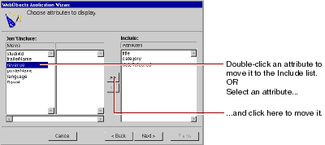

Table of Contents
Table of Contents  Next Section
Table of Contents
Next Section
Table of Contents  Previous Section
Previous Section

The order in which you add the attributes determines the order in which they appear on the page, so add them in the following order: title, category, dateReleased, and revenue.
Don't add any of the remaining attributes (for example, trailerName, studioId, posterName, and language)-they aren't used in this tutorial.
Table of Contents Next Section